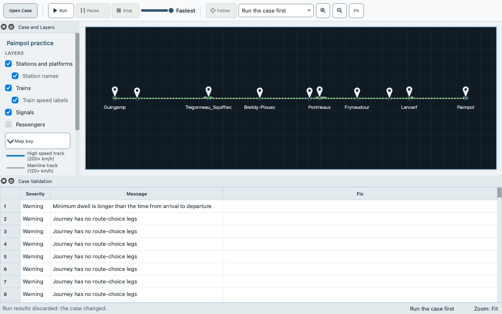
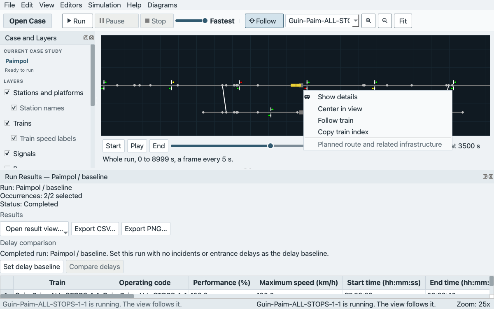

How-to¶
Short recipes for the common tasks. Each says what you need, what to do and what you should see. Getting started is the walk from a download to a first run, and the glossary defines the words. On macOS the key Ctrl in a shortcut is the Command key, and Keyboard shortcuts lists every shortcut.
Open a case¶
You need a case: an example case of the package, an .egscene file or a scene folder.
Use one of these:
Click Open Case in the toolbar. In Open a Case, select an entry under Bundled cases or Recent cases and click Open. A long case name is shortened in the middle of the row; hold the pointer over the row to see the whole name and the path. Other ways to open… offers New Case Study…, Open Scene Folder… and Import Legacy Case….
Choose File > Open Case Study… (Ctrl+O) and select an
.egscenefile.Choose File > Open Scene Folder… and select a folder that holds
scene.json.Choose File > Recent Scenes. It lists the last 8 cases you opened or saved, each under the name that Open a Case shows (a saved
.egscenefile without its extension). The example cases of the package are not listed there; Open a Case has them under Bundled cases. The menu checks the files each time it opens. An entry whose file is gone readsUnavailable:and is disabled, and the menu is greyed out while the list is empty.Drag one
.egscenefile onto the window. A folder or several files are refused withDrop rejected: <reason>. Scene unchanged.in the status bar.On Windows and macOS, double-click an
.egscenefile (Open by double-click).From a terminal,
QEGTRAIN --scene path/to/case.egsceneopens a bundle or a scene folder, andQEGTRAIN path/to/case.egsceneopens a bundle (command-line options).
The dialogs of Open Case Study… and Open Scene Folder… start in the folder above the open case. With no case open, they start in the Scenes folder of the app on macOS, and in your home folder on other systems.
You should see the window title EGTRAIN - <case name>, the network in the view and the status bar Scene loaded: <case name> (<n> services, <m> routes). Opening a case does not run it and does not change the file.
If the case does not open, a dialog says why: Cannot Open Case Study, Older Scene Not Supported or Newer Scene. Opening an .egscene case study explains each. While the current case has unsaved edits, see the unsaved changes question.
Normal mode keeps the network view and the editors uncluttered. View > Advanced / Developer details switches to advanced mode, which raises the dock Loaded Data automatically after a case opens and shows the full validation counts, the non-blocking warnings and the technical inventories. In normal mode View > Loaded Data and View > Scene Validation still open those docks. The choice changes what is shown, not what a run does.
Copy and save a case¶
An example case of the package is read-only in practice: EGTRAIN never saves into the installation. Make your own copy before you edit.
Choose File > Save Case Study As….
Choose a folder of your own and a file name. EGTRAIN adds
.egscenewhen you leave it off. The dialog starts in the folder of your open case, or in your Documents folder for an example case.Save.
You should see Scene saved in the status bar. Your file is now the open case, and it appears in File > Recent Scenes. The original is unchanged. The file holds the inputs of the case and no results, replay or delay baseline.
Other ways to save:
File > Save Scene (Ctrl+S) writes the case back to the bundle or scene folder it came from. For an example case of the package, and for a new case that has no file yet, it asks for a new
.egscenefile instead, as Save Case Study As… does, and Cancel keeps the edit. A scene folder outside the installation, such as one in a source checkout, is saved in place.File > Save Scene As Folder… writes the scene as a folder of JSON files, which you can edit by hand. If the folder you choose is not empty and holds no
scene.json, EGTRAIN asksSave scene files there?. A folder that already holds ascene.jsonis written over without a question; other files in it are kept.A destination inside the installation is refused with Cannot Save Scene:
Installed example scenes cannot be overwritten. Choose a location outside the EGTRAIN installation.
To check a saved case, open it again from File > Recent Scenes. The three save commands are enabled whenever a case is open, also during a run.
Run a case¶
You need an open case with no validation error. Getting started walks through a first run.
Click Run in the toolbar, or choose Simulation > Run (Ctrl+R).
Read the dialog Run simulation and click Run simulation. Cancel returns to the window without a run.
The trains move on the network view, and the status bar reads Running scene: <case name>. Pause and Stop are in the toolbar.
A run starts its clock at the Base time in Editors > Case Settings.
Fix validation errors¶
You need an open case. EGTRAIN checks it when it opens, after every edit and before every run. An error disables Run and a warning does not.
Read the line under Current case study in the dock Case and Layers. It says Ready to run, or it shows the first error.
Choose View > Scene Validation (Ctrl+Shift+V). The table lists the findings, errors first, with Severity, Code, Message, File, Path and Fix. Without View > Advanced / Developer details, Code, File and Path are in the tooltip of a row instead.

Fix the first error in the editor that matches its File and Path (menu Editors), and read the table again. It updates after each edit.
Repeat until no error is left. Run is then enabled.
You can save a case that has errors. Warnings do not stop a run, but read them: the dialog Run simulation repeats the one about route sections that have no signalling level. Examples of errors and their usual fixes:
A service names a composition or a route that does not exist. Choose an existing one in Services, or add the missing record.
A stop names a platform that the route does not reach, or the stops are out of route order. Correct the stop on the tab Timetable of Services.
A rolling stock unit has no traction rows, or its rows overlap, are out of order or have a lower speed that is not below the upper speed. Correct them in Rolling stock units.
Run stays disabled while any error remains. From a terminal, scene_tool validate --runnable path/to/scene prints the same findings (scene_tool).
Answer the unsaved changes question¶
After an edit the case is unsaved. EGTRAIN then asks (The current scene has unsaved changes.) before it replaces the case, which happens when you open another case, choose New Case Study…, load a legacy case or close the window. On Windows and Linux the box is titled Unsaved Scene and offers Save, Discard and Cancel. On macOS it is a sheet without a title that offers Save, Cancel and Don’t Save, which does what Discard does.
Save saves the case first. For an example case or a new case it asks for a new
.egscenefile, and if you cancel that dialog, the open or close is cancelled too.Discard (Don’t Save on macOS) drops the edits.
Cancel keeps the case and its edits. After an open, the status bar reads
Open canceled. Current scene retained.
If EGTRAIN closes without an answer, for example after a crash, it offers the edits again at the next start in Recover Unsaved Work (see Getting started). Edit > Undo and Edit > Redo step through the edits of the session.
Edit a timetable stop¶
You need an open case that you have copied (Copy and save a case) and no active run. The contents of the dock Services are disabled during a run; the menu entry still opens it.
Choose Editors > Services and select the service in the list at the top of the dock. The dock has the tabs Service, Timetable and Run occurrences. Open the tab Timetable.
In the table of stops, click the row of the stop. The dialog Edit Timetable Stop opens with the station, the platform, Minimum dwell (s), Planned arrival and Planned departure.
Change the field. Planned time display switches the dialog between Elapsed offsets (s) (seconds from the base time of the case) and Clock time. Blank means the time is absent, and
0is the start of the simulation.Click OK to apply the fields together, or Cancel to leave the stop as it was.
The buttons Add Stop, Insert After Selected, Remove Stop, Move Up and Move Down change the list of stops. After an edit the validation runs again, and the results, the replay and the delay baseline are discarded. Run again to see the effect. Edit > Undo reverts the edit. The rules for the times, the platforms and the insert positions are in Edit and validate.
For the whole exercise of changing a copy, saving it, opening it again, validating it and running it while the original stays as it was, follow the tutorial.
Edit rolling stock¶
You need an open case that you have copied and no active run. The editors Rolling stock units and Compositions are not disabled during a run, but an edit there discards the results of that run.
Choose Editors > Rolling stock units. Add Unit, Duplicate and Delete change the list. Select a unit to edit its physical values and its traction rows (Add Row, Delete Row). Plot Traction Curve plots the curve. The number fields stop at wide limits, and a number that no rail vehicle has, for example one read from a file, gives the warning
scene.train.value.implausiblein Scene Validation. The limits are in Rolling stock.Choose Editors > Compositions to put units in order for a train: Add Composition, Add Unit, Remove Unit, Move Up, Move Down.
Choose the composition of a service in Editors > Services.
Link File… on the tabs Physical and Traction of the editor of a unit reads the values of a unit from a parameter file or a traction file. The links last for the session: Unlink removes one, and reopening or replacing the case clears them. Review what loaded gives the file formats and the rules for a changed file.
Compare a scenario with a baseline¶
A scenario is a named set of incidents and entrance delays. Set delay baseline freezes a completed run without them, and Compare delays shows how much later or earlier each call of a run with them is. Any edit of the case clears the baseline, so build the scenario before you run the baseline.
Choose Editors > Incidents. The list Scenarios holds each scenario. Click New, or select a scenario and click Duplicate, to create the scenario to test.
In the incident editor of the dock, click Add Incident and fill its fields. A signal head or a train that is selected on the network view becomes the target of the new incident. The icon button Pick beside Target waits for the next one that you click and takes it as the target; Esc or a second click on Pick stops the wait. A signal head gives a signal failure of its block, or of the authored signal when exactly one protects its section, and a train of a completed run gives a breakdown of its occurrence. You can also start on the network view: right-click a signal head and choose Add signal failure, or right-click a train after a run and choose Add train breakdown. The information panel of a signal or a train has the same action as a button under its fields. It adds the incident to the selected scenario as one edit, which Undo takes back, opens the tab Incidents with the new incident selected and puts the cursor in Start (s). It is disabled while the case runs and when the item gives no target, and its tooltip says why. After a run the new incident discards the results, as any edit does, and the status bar says so. For an entrance delay, open the tab Entrance delays and click Add. This adds a row for the first service that has a planned departure, at its first stop with one, with a delay of 0 s. With the row selected, change Service, Occurrence, Station and Delay (s); the line in the list follows each change, and Delay (s) takes effect when you press Enter or leave the field.
Select the scenario without incidents and entrance delays (the example cases have one,
baseline). Click Run, and Run simulation. When the run has ended, click Set delay baseline in the dock Run Results. The line under Delay comparison names the baseline.Select the scenario with the incident in the list Scenarios. This keeps the baseline and discards the results. Run it.
Click Compare delays. The window Delay analysis opens on the tab Against baseline.
The two buttons say why they are disabled in their tooltips and in the line above them. Set delay baseline needs a completed run whose scenario has no incident and no entrance delay. Compare delays needs a baseline and a completed run whose scenario has at least one of them. The tab lists every reason when the baseline does not fit the run: the runs need different scenarios and the same scene revision, base time, duration, timestep and occurrences. How delays are calculated has the rules. Scenario library and student loop describes the library. Import… and Export… in the dock move a single scenario between cases.
Move around the network view and follow a train¶
Zoom. Turn the mouse wheel to zoom around the pointer, or use the zoom buttons of the toolbar (Ctrl++ and Ctrl+-). On a trackpad, a pinch zooms. Fit (Ctrl+0) shows the whole network. A network that is fitted has no room to move, so zoom in first.
Pan. Drag the view. On a trackpad, two fingers move it.
Select. Click a track, connection, node, station, signal, train or passenger. The information panel for it opens, or for a passenger a box of its details above it, and a light blue ring marks the item. Click an empty part of the view, or close the panel, to remove the ring.
Find. Choose Edit > Find… (Ctrl+F) and type part of the name or ID of a station, signal or train. A signal is listed by its track and the labels of its sections, such as
Signal: Track B0 at 0.23 km; ahead B0 0.230 to 0.310 km; behind B0 0.000 to 0.230 km, right, and the id of a section, such as@1-B0@, finds it too. Up and Down choose one in the list and Enter goes to it: the view centres on the item, zooms in so that it can be read, and selects it as a click does, so a running train is also followed. Esc closes the box. Trains are listed while a run or a replay shows them; signals are not listed while the Signals layer is off.Context menu. Right-click an item. A train offers Show details, Add train breakdown, Center in view, Follow train, Copy train index and the disabled entry Planned route and related infrastructure. Most other items offer Show details, Center in view and a copy command, and a signal head also offers Add signal failure after Show details (compare a scenario). During a run a signal head offers Copy signal location and Copy section ID, which copies the id of the section that Protected section shows in its information panel. Right-click the empty view for Fit whole network, Clear selection and Stop following train.
Layers. The check boxes in Case and Layers hide stations, station names, trains, speed labels, signals and passengers. Passengers is the same switch as View > Show Passengers. It is off at the first start and keeps the last choice; turning it on takes effect from the next run.
Follow. Choose a train in the list next to Follow in the toolbar and click Follow. The view moves with the train, also while the run is paused. Click Follow again, or choose Stop following train, to stop.
Follow is disabled before a run and in a case without services, and its tooltip says why. A train that has not entered the network is listed with its scheduled entry time, for example Rail-1 (scheduled 08:25:50), and Follow starts when it enters. The label at the right of the status bar names the state of the selected train, and its tooltip says whether the train is followed and why not. In a live run Follow switches off when the train leaves the network. In the replay of a completed run it stays on after the train has left, and it continues when you go back in time. Scenario library and student loop describes the camera in detail. For the result windows, see Inspecting diagrams.
Replay a completed run¶
You need a run that reached its end. A stopped or failed run has no replay, and a stopped run keeps no results either.
When the run has ended, the Replay row appears under the network. Click Start, Play or End, the icon buttons left of the slider, or move the slider. The arrow keys and the mouse wheel move the slider too.
Each selection shows the last recorded frame at or before the chosen time, not an interpolated position. The label beside the slider shows the clock time of the frame in the format of the progress bar, for example
08:20:30. Play advances one simulated second for each second of real time, and the button then turns into Pause.The text under the controls says which part of the run the replay holds, and that a frame is recorded every 5 simulated seconds, for example
Whole run, 0 to 7999 s, a frame every 5 s.
The replay has 128 MiB of memory. A run that is larger loses its oldest frames. The text then says from which time the replay starts, for example Starts at 10:00:20 (7220 s), ends at 7999 s, a frame every 5 s. The earlier part was not kept because the run is larger than the replay memory (128 MiB). The slider covers only the kept part, and Start goes to its first time. The tooltip of Start says so. If not even one moment fits, the row says No replay with the reason, and the slider and Play are disabled.
Train, station and signal selections stay across seeks. A train that has no position at the selected time is not drawn. Passenger journey details are not available in a replay, but the counts and statuses are. A new run, an edit of the case or another scenario clears the replay and returns the view to the preview. An edit or another scenario also closes the info dock of the selection.
Results and exports¶
You need a run that reached its end. Until then the result commands are disabled.
The dock Run Results opens when the run ends. If it is closed, choose its entry in the menu View, which starts with Run Results.
Click Open result view… and choose an entry, or use the menu Diagrams. An entry in Diagrams that asks for more input ends in an ellipsis.
Timetable graph and Train paths first ask for a reference route, and Blocking time asks for its scope. Capacity needs at least two trains that occupy a common block: choose a route and check the trains, and the analysed blocks follow from them. Where the trains share more than one section of the route, Blocks offers each one in route order and selects the longest.
In a chart window, the button Trains filters the trains, Reset zoom returns to the full chart, and Export CSV… and Export PNG… save the data and the picture of the visible trains. After a CSV export, the status bar of the main window names the saved file for a few seconds. Hover, click, zoom and pan are described in Inspecting diagrams.
The buttons Export CSV… and Export PNG… in the dock save the summary table as run_summary.csv and run_summary.png. Each export asks for a path, adds the extension when you leave it off and writes a second file, <name>.provenance.json, that records the run. Exports are not written to the output folder, and they are not part of the case. An export dialog starts in your Documents folder, or in your home folder when there is none. A window keeps the run it was opened for, so a later run does not change it. If the write fails, the message Export failed names the path.
Delay figures are explained in How delays are calculated, capacity in How capacity is analysed and the text files of a run in Run output.
Convert a legacy case and write legacy files¶
A legacy case is the input folder of earlier versions. EGTRAIN converts it into a new scene folder and leaves the source unchanged.
Choose File > Load Legacy Case…, or Other ways to open… > Import Legacy Case… in Open a Case. The chooser in Open a Case first asks
Choose the original text-input folder, then a folder for the converted scene. Continue?The menu entry goes straight to the folder dialogs.Select the legacy case folder in Select Legacy Case Folder, then a destination in Select Scene Destination. The destination must already exist, so create an empty folder for it first (the folder dialog has a button for a new folder); a name that does not exist gives
Directory not found. It must be separate from the source and outside it, or Cannot Import Legacy Case says so. If the open case has unsaved edits, EGTRAIN asks about them after you have chosen both folders and before it imports.Read Legacy Import Diagnostics, which counts errors and warnings and shows the first findings. The converted scene then opens.
scene_tool exportwrites the base time and the simulation settings toEGTRAINInitialParameters.json, and the import reads that file. A legacy case without it whose name is not a known case has no base time and no duration: the scene reports two validation errors and cannot run until you set both in Editors > Case Settings. The details are inimport_reportinscene.json, and the dock Loaded Data shows the counts.
From a terminal:
scene_tool import path/to/legacy-case path/to/new-scene SceneName
scene_tool validate path/to/new-scene
The window cannot write legacy files. scene_tool export path/to/scene path/to/legacy-output writes them for another tool, and edits to those files do not flow back into the scene. Convert a legacy case lists what the conversion preserves, and the migration matrix says what each legacy file becomes.
Close, start a new case or open another during a run¶
Closing the window, New Case Study…, the open commands and Load Legacy Case… first ask for the unsaved changes question if the case has edits. They then ask the running simulation to stop. The status bar shows Stopping simulation... and the window stays usable. The command goes on when the run has stopped, and the current case is replaced only then, so an open that fails leaves it in place. A stopped run leaves no results.
Change the application settings¶
Edit > Preferences… opens the window Settings. On macOS the entry is EGTRAIN > Preferences… (Command+,). The window holds the settings that apply to every case:
General: the recent cases that File > Recent Scenes and Open a Case offer, and Clear Recent Cases.
Display: Show passengers, the same switch as View > Show Passengers, and Advanced / Developer details, the same as the View entry.
Updates and privacy: Automatically check for updates, the same as the Help entry, and the two choices of Help > Privacy & diagnostics…. A build that collects nothing shows them disabled.
OK saves the changes, and the menu entries show them at once. Restore Defaults clears the recent cases and turns every switch off; EGTRAIN then asks about automatic update checks again at the next start. It too takes effect with OK. The settings of the open case, such as its base time and duration, are in Case Settings.
If EGTRAIN closes unexpectedly¶
When EGTRAIN crashes, it saves a short crash note with the version, the cause and, on macOS and Linux, where in the program it stopped. The system may show its own crash message as well. At the next start EGTRAIN says that it closed unexpectedly and where the note is: in Recover Unsaved Work when it has unsaved edits to offer, otherwise in the notice EGTRAIN Closed Unexpectedly, whose Show Crash Note opens the note. Each note is reported once. Attach it when you report the problem; EGTRAIN does not send it anywhere.
System |
Crash notes folder |
|---|---|
macOS |
|
Windows |
|
Linux |
|
EGTRAIN keeps the 10 newest notes that it has reported.
Why a command is disabled¶
Command |
It is disabled when |
What to do |
|---|---|---|
Run (toolbar), Simulation > Run, File > Run Scene |
No case is open, a run is active, or validation reports an error |
Read the first error in View > Scene Validation (fix validation errors) or wait for the run |
Pause, Stop |
No run is active, or the run is already stopping |
Start a run, or wait for the run to stop |
File > Save Scene, Save Case Study As…, Save Scene As Folder… |
No case is open |
Open or create a case. A normal start always has one open |
File > Set Output Folder… |
A run is active |
Wait for the run to end. The folder applies from the next run |
The contents of the editors Services, Passengers, Infrastructure and Incidents (the menu Editors still opens them) |
A run uses the case |
Stop the run or wait. Case Settings, Rolling stock units and Compositions stay usable during a run, and an edit there discards the results of that run |
Edit > Undo, Edit > Redo |
A run uses the case, or there is nothing to undo or redo |
Stop the run or wait |
Diagrams entries, Open result view…, Export CSV…, Export PNG… in Run Results |
No run has reached its end since the last edit |
Run again. A stopped run, an edit, a new case and another scenario all discard results |
Set delay baseline |
There is no completed run, or its scenario has an incident or an entrance delay |
|
Compare delays |
There is no baseline, or the completed run has neither an incident nor an entrance delay |
Same |
Follow |
No run has started, or the case has no services |
Run the case and choose a train |
When Run is enabled but a message refuses the run, it names the problem, for example Select at least one generated service occurrence before running. On Windows and Linux the message is titled Cannot Run Scene. In the tab Run occurrences of Services, tick Run for at least one occurrence.